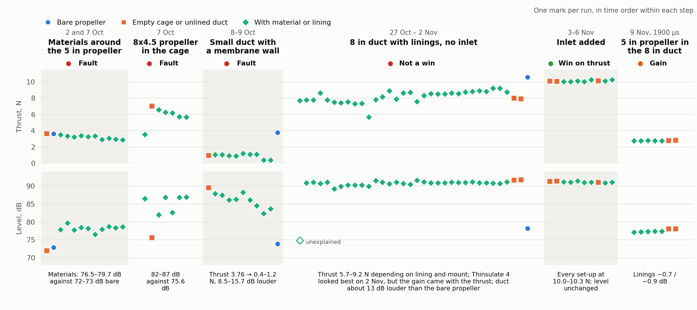

2 October – 9 November 2026. Levels are the total from 500 Hz to 20 kHz over the microphones from −54° to +90°, at 2000 µs unless stated.
Each lining is compared with the unlined set-up of the same day. The reasons are Adam's account, except those marked *, which are filled in and still to be confirmed by him; the numbers come from the recordings (CLAIMS.md governs).

| When | What we did | Why | What followed | Outcome |
|---|---|---|---|---|
| 2 and 7 Oct | Wrapped materials around the 5 in propeller: cork, rubber, felt, felt + rubber, PU foam, Thinsulate 4 and 8, combinations. One repeat each. | First look at whether an absorbing material close to the propeller lowers the noise.* | Every material was louder than the bare propeller (76.5–79.7 dB against 72–73 dB) and lost thrust (2.9–3.5 N against 3.6 N). | Fault |
| 7 Oct, afternoon | The same with the larger 8x4.5 propeller in the cage. First runs with three repeats. | To see whether the result holds for a bigger propeller, and how much one set-up scatters.* | Same result, larger: bare 7.05 N / 75.6 dB; with materials 5.7–6.6 N / 82.0–86.9 dB. Three repeats became the standard. | Fault |
| 8–9 Oct | Built a small duct with an Oracover membrane wall and put ten linings behind the membrane. | A thin membrane should let the sound through to the material with little loss, so the material can work. No aerodynamic treatment was added. | The duct took most of the thrust (3.76 N bare, 0.37–1.20 N ducted) and was 8.5–15.7 dB louder than the bare propeller. The quietest linings were also the ones with the least thrust. | Fault |
| 27 Oct – 2 Nov | 8 in duct with the 8x4.5 propeller and linings: PETG, PU foam, Thinsulate 2–10, felt, rubber, combinations. No inlet. | A larger duct that keeps usable thrust, to compare linings in it.* | Thrust depended on the lining and its mount (5.7–9.2 N). On 2 Nov Thinsulate 4 looked best: +1.26 N, −0.95 dB against the unlined duct. But the gain came with the thrust: the plain inlet of the next step gave +2.1 N, and with it the same lining took off only 0.31 dB. | Not a win |
| 3–6 Nov | Added an inlet to the duct and repeated the linings. | Thinsulate 4 seemed to work by narrowing the duct towards a better entry shape, so the entry itself was worth fixing.* | Thrust of the unlined duct rose from 8.0 to 10.1 N and every lining landed at 10.0–10.3 N. The noise did not move (91.7 against 91.4 dB), and the linings now did a third of what they did before (−0.2 / −0.3 dB). | Win on thrust |
| 9 Nov | Put the 5 in propeller in the same 8 in duct, inlet on. | With the blade tips far from the wall the duct should act less on the flow and more like a cover holding the material. | The linings did more: −0.7 / −0.9 dB against 0.0 / −0.25 dB with the 8 in propeller (1900 µs). A fault appeared at 2000 µs that day, cause not found. | Gain |